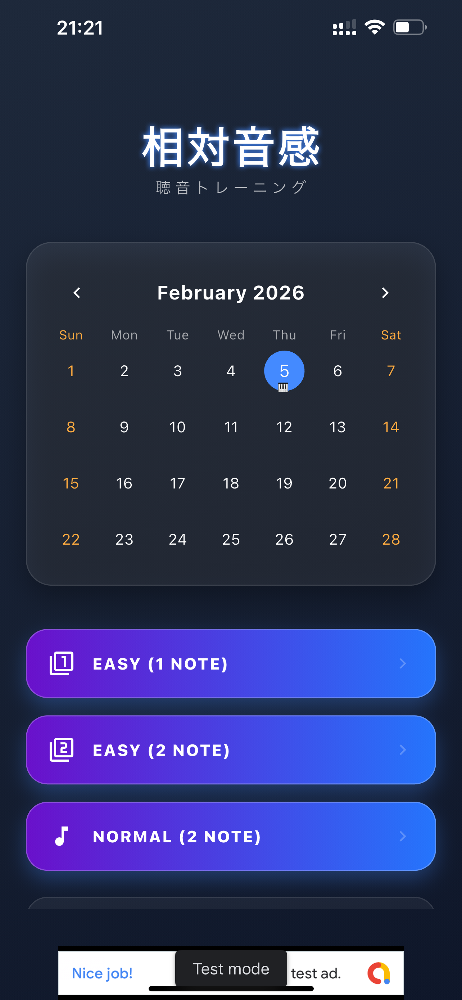
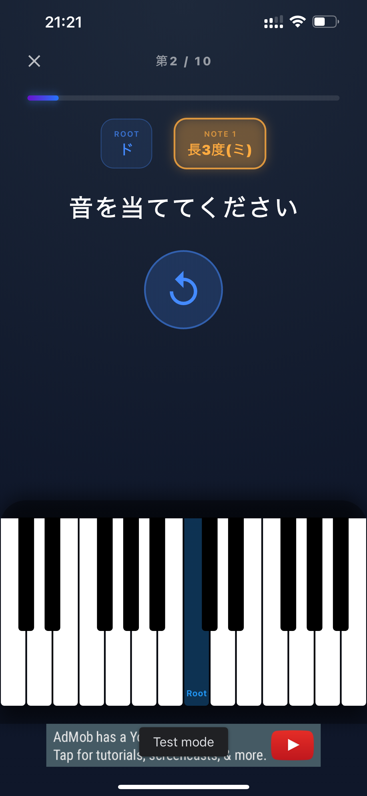
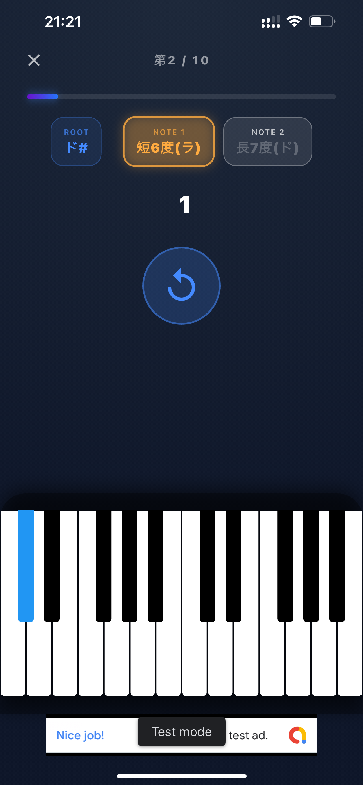
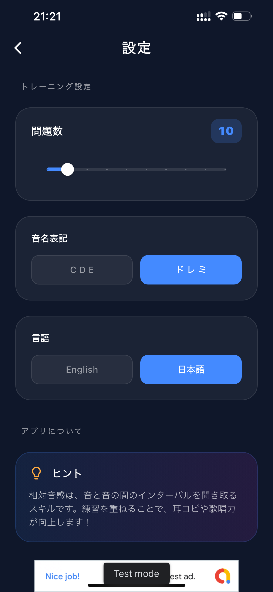
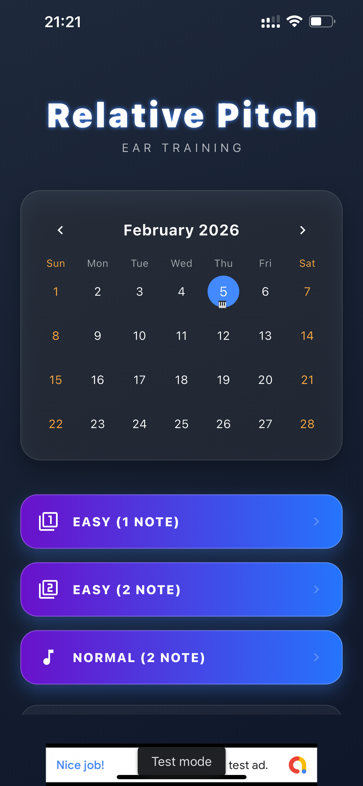

Relative Pitch Trainer
Ear Training for Musicians 相対音感・聴音トレーニング
Download on the App Storeから App Store ダウンロード




Features 主な機能
Interval Ear Training 音程を聞き分けるトレーニング
Practice identifying musical intervals by listening to piano sounds. Build your ability to recognize the distance between notes.
ピアノの音を聴きながら、音と音の距離である「音程」を聞き分ける練習ができます。 繰り返し練習することで、音の関係を聴き取る力を養います。
Multiple Difficulty Levels レベルに合わせた練習
Start with simple exercises and gradually move to more challenging two-note training as your skills improve.
初心者でも取り組みやすいシンプルな練習から、 2音を連続して聞き分ける練習まで、レベルに合わせて取り組めます。
CDE & Do-Re-Mi Notation 音名表記を選択
Choose between CDE notation and Do-Re-Mi notation. The app supports English, Japanese, and Vietnamese.
CDE表記とドレミ表記を切り替えて利用できます。 英語・日本語・ベトナム語にも対応しています。
Practice History 練習履歴を確認
Use the calendar view to look back at your practice activity and keep track of your daily training.
カレンダー形式の履歴から、これまでの練習状況を確認できます。 毎日の耳トレーニングを続けるための記録として活用できます。
Piano Sounds ピアノ音源を使用
Practice with piano sounds designed to make interval training easy to listen to and repeat.
ピアノ音源を使って、実際の音を聴きながら音程を練習できます。 繰り返し聴いて、音の関係を身につけることを目指します。
Completely Free 完全無料
All training features are available for free. There is no subscription required.
すべてのトレーニング機能を無料で利用できます。 サブスクリプションへの登録は必要ありません。
About Relative Pitch Training 相対音感トレーニングとは
Relative Pitch Trainer is an ear-training app designed for musicians, singers, producers, and anyone who wants to improve their ability to recognize musical intervals.
Practice by listening to piano sounds and identifying the relationship between notes. Short training sessions can be incorporated into your daily music practice.
Relative Pitch Trainerは、音程を聞き分ける力を身につけたい ミュージシャン、歌手、音楽制作者、楽器演奏者などのための 聴音トレーニングアプリです。
ピアノの音を実際に聴き、音と音の関係を答えることで、 相対音感のトレーニングに取り組めます。 毎日の音楽練習の中に、短時間の耳トレーニングを取り入れることができます。
Start training on the App Storeから App Store 今すぐ始めるFrequently Asked Questions よくある質問
Yes. Relative Pitch Trainer is completely free to use. All training features are available without a subscription.
はい。Relative Pitch Trainerは完全無料で利用できます。 すべてのトレーニング機能を無料で利用でき、 サブスクリプションへの登録も必要ありません。
It is suitable for beginners, singers, instrumentalists, composers, producers, and anyone interested in improving their musical hearing.
音楽初心者から、歌手、楽器演奏者、作曲家、音楽制作者まで、 音を聞き分ける力を鍛えたい方におすすめです。
You can practice identifying musical intervals by listening to piano sounds and answering the corresponding note relationship.
ピアノの音を聴いて、音と音の間隔である「音程」を 聞き分けるトレーニングができます。
Yes. You can start with simple training and gradually increase the difficulty as you become more comfortable.
はい。初心者でも取り組みやすい練習から始められます。 慣れてきたら、より難しいトレーニングに進むことができます。
No. You can use the app without creating an account.
いいえ。アカウントを作成することなく利用できます。
The app is designed as a supplementary ear-training tool.
本アプリは耳のトレーニングを補助するためのツールです。
Relative Pitch, Ear Training, Music Training, Interval Training, Music Theory, Piano, Musician, Singer, Composer, Free App
相対音感, 聴音, 音感, 音程, 耳トレ, 音楽トレーニング, 音楽理論, ピアノ, ミュージシャン, 歌手, 作曲, 無料アプリ